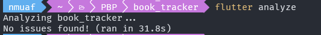
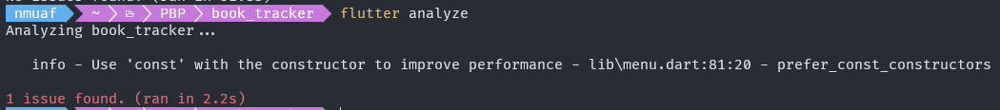

Tutorial 6: Pengantar Flutter
Pemrograman Berbasis Platform (CSGE602022) — diselenggarakan oleh Fakultas Ilmu Komputer Universitas Indonesia, Semester Genap 2023/2024
Tujuan Pembelajaran
Setelah menyelesaikan tutorial ini, mahasiswa diharapkan untuk dapat:
- Mengerti proses instalasi Flutter.
- Mengerti dan menggunakan perintah-perintah dasar Flutter yang perlu diketahui untuk mengerjakan proyek aplikasi.
- Memahami alur dasar pembuatan dan eksekusi aplikasi Flutter.
- Memahami elemen-elemen dasar pada Flutter.
Pengenalan Flutter
Flutter adalah sebuah framework aplikasi mobile sumber terbuka (open source) yang diciptakan oleh Google pada 2017. Flutter digunakan dalam pengembangan aplikasi untuk sistem operasi Android dan iOS. Flutter juga mendukung untuk pengembangan aplikasi berbasis web, Windows, Linux, dan MacOS secara native.
Keuntungan dari Flutter sendiri adalah kemampuannya untuk menciptakan aplikasi untuk berbagai platform dengan hanya satu codebase. Selain itu, fitur JIT (just in time) memungkinkan pengembang aplikasi untuk melihat perubahan yang dilakukan pada codebase secara langsung tanpa harus mengulang proses kompilasi kode aplikasi dari awal.
Instalasi Flutter
- Akses salah satu dari tautan berikut sesuai dengan sistem operasi yang kamu gunakan.
a. Mac OS
Khusus pengguna Mac OS yang menggunakan Homebrew, kamu dapat menggunakan perintah brew install --cask flutter untuk menginstal Flutter.
b. Windows
c. Linux
- Instal Flutter versi terkini (latest version) dengan mengikuti panduan pada tautan di atas.
Untuk pengguna Mac, silakan lewati tahap iOS Setup dan langsung ke tahap Android Setup.
- Instal IDE pilihan kamu yang akan digunakan untuk mengembangkan aplikasi Flutter.
a. Android Studio (Recommended)
Kamu dapat menggunakan Visual Studio Code untuk Flutter dengan menginstall ekstensi Dart dan Flutter.
Kamu juga dapat membaca fungsionalitas IDE yang disediakan oleh ekstensi Flutter pada tautan yang tersedia.
Tutorial: Getting Started with Flutter
-
Buka Terminal atau Command Prompt.
-
Masuk ke direktori di mana kamu ingin menyimpan proyek flutter-mu.
-
Generate proyek Flutter baru dengan nama book_tracker, kemudian masuk ke dalam direktori proyek tersebut.
Untuk membuat proyek lain, kamu dapat mengganti
book_trackersesuai dengan nama proyek yang kamu inginkan.
- Jalankan proyek melalui Terminal atau Command Prompt menggunakan perintah berikut.
Untuk pengguna macOS, terdapat beberapa opsi untuk menjalankan aplikasi flutter, namun yang termudah adalah:
- Menggunakan emulator pada Android Studio
-
Menggunakan Google Chrome
-
Jalankan perintah di bawah untuk enable web support (hanya perlu dilakukan sekali):
-
Kemudian, di direktori proyek, jalankan proyek tersebut di aplikasi Google Chrome dengan perintah:
-
Akan muncul tampilan seperti di bawah ini.

- Jalankan perintah
git initpada root folder untuk menginisiasi proyek sebagai repositori Git, kemudianadd-commit-pushproyek ke sebuah repositori baru di GitHub. Kamu dapat menamai repositori barumu dengan namabook-tracker-mobile.
Tutorial: Merapikan Struktur Proyek
Sebelum menyelam ke Flutter lebih lanjut, kamu akan merapikan struktur file pada proyek kamu terlebih dahulu agar kode proyek dapat lebih mudah dipahami. Hal ini merupakan bentuk penerapan best practice dalam pengembangan aplikasi, yakni clean architecture.
- Buatlah file baru bernama
menu.dartpada direktoribook_tracker/lib. Pada baris pertama file tersebut, tambahkan kode di bawah ini.
- Dari file
main.dart, pindahkan (cut) kode baris ke-39 hingga akhir yang berisi kedua class di bawah ini:
ke file menu.dart yang baru saja kamu buat.
- Kamu akan melihat bahwa pada file
main.dart, akan terdapat error pada baris ke-34, yang berisi kode berikut:
Hal ini terjadi karena file main.dart tidak lagi mengenali class MyHomePage yang sudah kamu pindahkan ke file lain, yaitu menu.dart. Untuk menyelesaikan masalah ini, tambahkan kode berikut ini pada awal file main.dart.
- Jalankan proyek melalui Terminal atau Command Prompt dengan perintah
flutter rununtuk memastikan bahwa aplikasi tetap dapat berjalan dengan baik.
Tutorial: Membuat Widget Sederhana pada Flutter
Dalam bagian ini, kamu akan mempelajari cara membuat widget sederhana di Flutter. Kamu akan membuat nama dari tracker kamu sebagai header dan membuat card sebagai button untuk fitur-fitur aplikasi kamu. Saat button yang ada ditekan, akan keluar pemberitahuan di bagian bawah layar.
Pertama-tama, kamu bisa mengubah tema warna aplikasi menjadi indigo dengan melakukan langkah berikut.
-
Buka file
main.dart. -
Ubah kode pada
main.dartdi bagian tema aplikasi kamu yang mempunyai tipeMaterialAppmenjadi seperti di bawah ini.
- Coba jalankan kembali proyek kamu untuk melihat apakah warna tema aplikasi sudah berubah menjadi indigo.
Kamu juga bisa mengubah warna tema aplikasi sesuai yang kamu inginkan dengan mengacu kepada dokumentasi
Colors.
Setelah mengubah warna tema aplikasi, kamu akan mengubah sifat widget halaman menu menjadi stateless.
- Pada file
main.dart, hapusconst MyHomePage(title: 'Flutter Demo Home Page')sehingga cukup menjadi:
saja. Jangan lupa untuk menghapus kata kunci const-nya juga.
-
Pada file
menu.dart, kamu akan mengubah sifat widget halaman dari stateful menjadi stateless dengan: -
Mengubah
...extends StatefulWidgetmenjadi...extends StatelessWidgetdan menghapus kata kunciconstpada baris yang sama - Mengubah bagian
({super.key, required this.title})menjadi({Key? key}) : super(key: key); - Menghapus variabel
final String title;, komentar-komentar pada file, dan seluruh classclass _MyHomePageState extends State<MyHomePage> - Menambahkan Widget build sehingga kode terlihat seperti di bawah.
Setelah melakukan langkah-langkah tersebut, seharusnya file menu.dart kamu terlihat seperti ini.
class MyHomePage extends StatelessWidget {
MyHomePage({Key? key}) : super(key: key);
@override
Widget build(BuildContext context) {
return Scaffold(
...
);
}
}
Setelah mengubah sifat widget halaman menu menjadi stateless, kamu akan menambahkan teks dan card sebagai tombol, salah satunya untuk memperlihatkan buku yang sedang kamu track.
- Untuk menambahkan teks dan card, kamu dapat memulai dengan mendefinisikan tipe item untuk masing-masing card pada file
menu.dart. Letakkan kode di bawah ini di luar classMyHomePageyang sudah ada.
Setelah itu, kamu dapat menambahkan list berisi tombol-tombol yang ingin kamu tambahkan beserta icon yang ingin digunakan di bawah kode MyHomePage({Key? key}) : super(key: key);.
final List<TrackerItem> items = [
TrackerItem("Lihat Buku", Icons.library_books_rounded),
TrackerItem("Tambah Buku", Icons.library_add_rounded),
TrackerItem("Logout", Icons.logout),
];
- Selanjutnya, ubah nilai yang di-
returnoleh widgetbuildmenjadi kode di bawah ini.
...
return Scaffold(
appBar: AppBar(
title: const Text(
'Book Tracker',
),
),
body: SingleChildScrollView(
// Widget wrapper yang dapat discroll
child: Padding(
padding: const EdgeInsets.all(10.0), // Set padding dari halaman
child: Column(
// Widget untuk menampilkan children secara vertikal
children: <Widget>[
const Padding(
padding: EdgeInsets.only(top: 10.0, bottom: 10.0),
// Widget Text untuk menampilkan tulisan dengan alignment center dan style yang sesuai
child: Text(
'PBP\'s Tracker', // Text yang menandakan tracker
textAlign: TextAlign.center,
style: TextStyle(
fontSize: 30,
fontWeight: FontWeight.bold,
),
),
),
// Grid layout
GridView.count(
// Container pada card kita.
primary: true,
padding: const EdgeInsets.all(20),
crossAxisSpacing: 10,
mainAxisSpacing: 10,
crossAxisCount: 3,
shrinkWrap: true,
children: items.map((TrackerItem item) {
// Iterasi untuk setiap item
return TrackerCard(item);
}).toList(),
),
],
),
),
),
);
- Walaupun sebelumnya terdapat error, kamu tidak perlu khawatir. Kamu hanya perlu membuat widget stateless baru untuk menampilkan card. Tambahkan class di bawah ini (masih di file yang sama) di luar class-class yang sudah ada.
class TrackerCard extends StatelessWidget {
final TrackerItem item;
const TrackerCard(this.item, {super.key}); // Constructor
@override
Widget build(BuildContext context) {
return Material(
color: Colors.indigo,
child: InkWell(
// Area responsive terhadap sentuhan
onTap: () {
// Memunculkan SnackBar ketika diklik
ScaffoldMessenger.of(context)
..hideCurrentSnackBar()
..showSnackBar(SnackBar(
content: Text("Kamu telah menekan tombol ${item.name}!")));
},
child: Container(
// Container untuk menyimpan Icon dan Text
padding: const EdgeInsets.all(8),
child: Center(
child: Column(
mainAxisAlignment: MainAxisAlignment.center,
children: [
Icon(
item.icon,
color: Colors.white,
size: 30.0,
),
const Padding(padding: EdgeInsets.all(3)),
Text(
item.name,
textAlign: TextAlign.center,
style: const TextStyle(color: Colors.white),
),
],
),
),
),
),
);
}
}
Sebagai bentuk best practice, jalankan perintah flutter analyze pada root folder proyek setelah kode kamu selesai ditulis. Hal ini sebaiknya dilakukan untuk memastikan tidak ada isu-isu pada kode kamu yang dapat mengganggu performa atau fungsionalitas aplikasi. Jika kamu mengikuti tutorial dengan baik, seharusnya hasil perintah menunjukkan bahwa tidak ada isu terdeteksi pada proyek kamu.

Apabila ternyata terdapat isu pada kode kamu (contohnya pada gambar di bawah), cobalah untuk menyelesaikan isu tersebut dengan mengikuti tutorial secara lebih teliti atau memperhatikan baris kode di mana isu tersebut terjadi.

Langkah ini juga dapat membantu proses building yang akan dilakukan pada beberapa tutorial yang akan datang.
Akhir Kata
Selamat! Kamu telah menyelesaikan Tutorial 6 dengan baik. 😄
-
Pelajari dan pahami kembali kode yang sudah kamu tuliskan di atas dengan baik.
-
Lakukan
add,commitdanpushuntuk memperbarui repositori GitHub.
- Ubah
<pesan_commit>sesuai dengan keinginan. Contoh:git commit -m "tutorial 6 selesai". - Ubah
<branch_utama>sesuai dengan nama branch utamamu. Contoh:git push -u origin mainataugit push -u origin master.
Referensi Tambahan
- Flutter Docs
- Write your first Flutter app, part 1
- An Introduction to Flutter: The Basics by FreeCodeCamp
- Flutter Course for Beginners – 37-hour Cross Platform App Development Tutorial by FreeCodeCamp
- An Introduction to Flutter Clean Architecture
Kontributor
- Muhammad Nabil Mu'afa
- Muhammad Iqbal Dwitama
Credits
Tutorial ini dikembangkan berdasarkan PBP Ganjil 2023 dan PBP Genap 2023 yang ditulis oleh Tim Pengajar Pemrograman Berbasis Platform 2023. Segala tutorial serta instruksi yang dicantumkan pada repositori ini dirancang sedemikian rupa sehingga mahasiswa yang sedang mengambil mata kuliah Pemrograman Berbasis Platform dapat menyelesaikan tutorial saat sesi lab berlangsung.